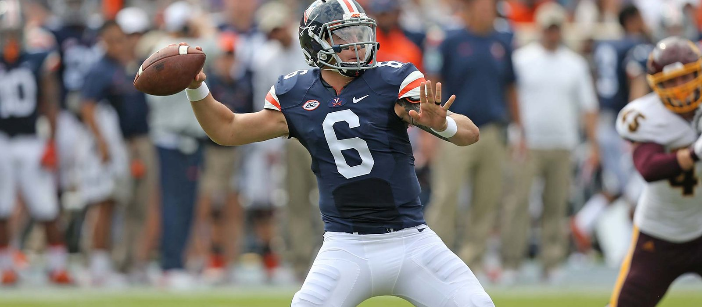

THE WHOLE RUN, DRAWN UP AS ONE DRIVE.
From a torn ACL the week of his first start to the most-watched football teacher on the internet. Scroll to move the chains.
THE ROAD
THEN THE KNEE GAVE OUT
A WEEK BEFORE KICKOFF.
East Carolina made him the guy in 2015. He never took the first snap. So he finished his degree in three years, became a graduate transfer, and picked a new huddle: Virginia, under Bronco Mendenhall, where he beat out two fifth-year seniors for the job.

THE RECORD
2017: the first Virginia quarterback ever to throw for 3,000 yards in a season, breaking Matt Schaub's mark. Along the way, a 455-yard single game record against UConn and 384 yards on No. 2 Miami. UVA's first bowl game in six years followed, then a Senior Bowl invite.
THE LEAGUE
Undrafted in 2018. Five seasons of quarterback rooms most players never see, a 2019 Hall of Fame Game start that made him a Falcons fan favorite, and one regular season appearance that became the best story on this site.
VICTORY FORMATION, TWICE.
FOURTH YEAR IN THE LEAGUE, FIRST SNAPS THAT COUNTED.
THE PIVOT
THAT'S MY CAREER.”
August 2023: he hung up the cleats and signed with Sleeper as their first NFL Insider. Not a fallback, a bet. The audience he built from the backup's seat became the whole business.
THE BUILD
The Dime Lab: 100k+ footballs sold and counting, born on the beach at 30A. Think Like a Quarterback: 10k+ copies of the film room in print. EA Sports' on-camera quarterback and a national broadcast chair on Peacock's Madden NFL Cast.
The drive ends where it was always going: he builds things now.